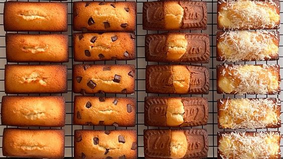

밀가루, 버터, 달걀, 우유 등을 넣고 반죽하여 직사각형 모양으로 구운 과자. '금전상의, 금융의'를 뜻하는 프랑스어 '피낭시에(financier)' 유래한 말로 완성된 모양이 금괴를 닮아서 붙여진 이름이다. 마들렌보다 단단하다.
아몬드 가루를 박력분과 비슷한 정도, 혹은 어느 정도 다량 첨유하여 뵈르 누아제트(beurre noisette, 그을린 버터), 설탕 등의 재료를 섞고 틀에 넣어 구운 과자이며, 구운 버터의 향과 아몬드의 고소한 풍미가 특징이다. 기원에 따라 금괴처럼 막대형으로 나오는 경우가 대부분이지만, 머핀 팬에 구워서 원형으로 나오는 경우도 있다. 같은 틀을 쓰면 마들렌과 비슷하지만 차이점이 많다. 마들렌과 달리 피낭시에는 달걀 흰자만 사용하고, 거품을 강하게 내지 않는다. 이외에도 버터를 볶는 과정, 버터의 양, 아몬드 파우더가 들어간다는 점 등등 아예 다른 과자라고 보면 된다.